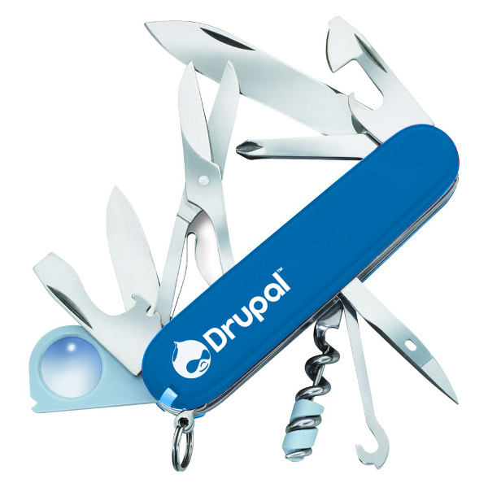
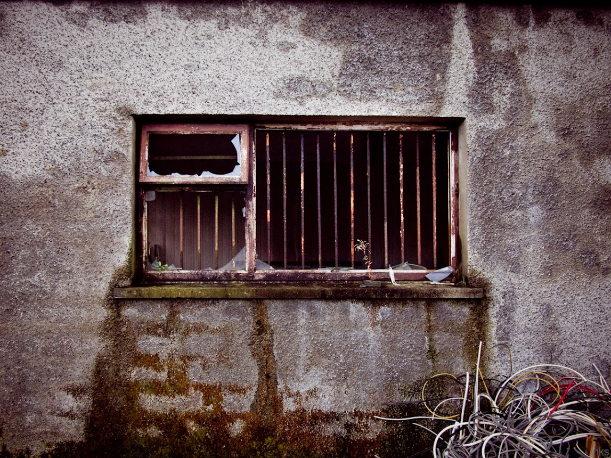
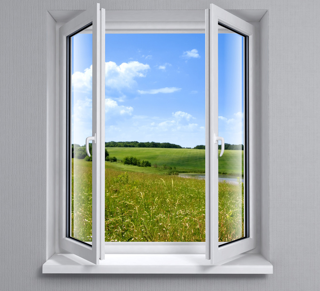
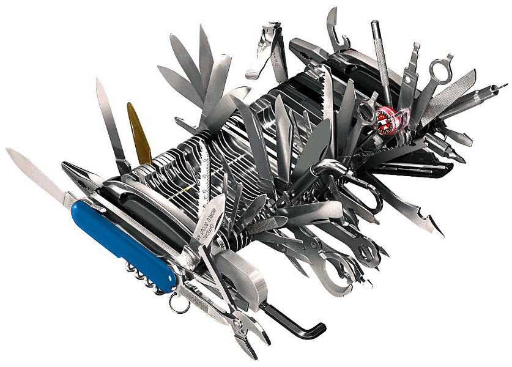

Permet d'automatiser le plus de fonctions manuelle posible.
L'erreur est humaine. Enlevons le facteur humain.
C'est peut-être un développeur junior qui va devoir pousser le code en ligne.
Tous les sysadmins sont malades (oktoberfest).
Entandu chez un client : "En toute franchise, la documentation de projet, c'est pas notre force."
Pear pear channel-discover pear.drush.org pear install drush/drush
Pear est brisé sur MacOSX Mountain Lion
sudo cp /private/etc/php.ini.default /private/etc/php.ini
sudo php /usr/lib/php/install-pear-nozlib.phar
pear config-set php_ini /private/etc/php.ini
pecl config-set php_ini /private/etc/php.ini
sudo pear upgrade-all
$aliases\['dev'\] = array(
'root' => '/path/to/drupal',
'uri' => 'dev.mydrupalsite.com',
);
$aliases\['live'\] = array(
'root' => '/other/path/to/drupal',
'uri' => 'mydrupalsite.com',
);
Compile en cascade un projet.
Télécharge tous les modules et les patchs spécifiées.
https://github.com/Wiredcraft/example core = "7.x" api = "2"
; Includes ====================================================================
includes[] = "https://raw.github.com/makara/buildkit_plus_v7/master/base.make"
; Modules =====================================================================
projects[mollom][type] = "module"
projects[mollom][subdir] = "contrib"
projects[mollom][version] = "1.1"
Gitosis est mort, longue vie à Gitosis!
Dernier commit est en 2009. Gitolite est complet et fonctionne bien.
/
#